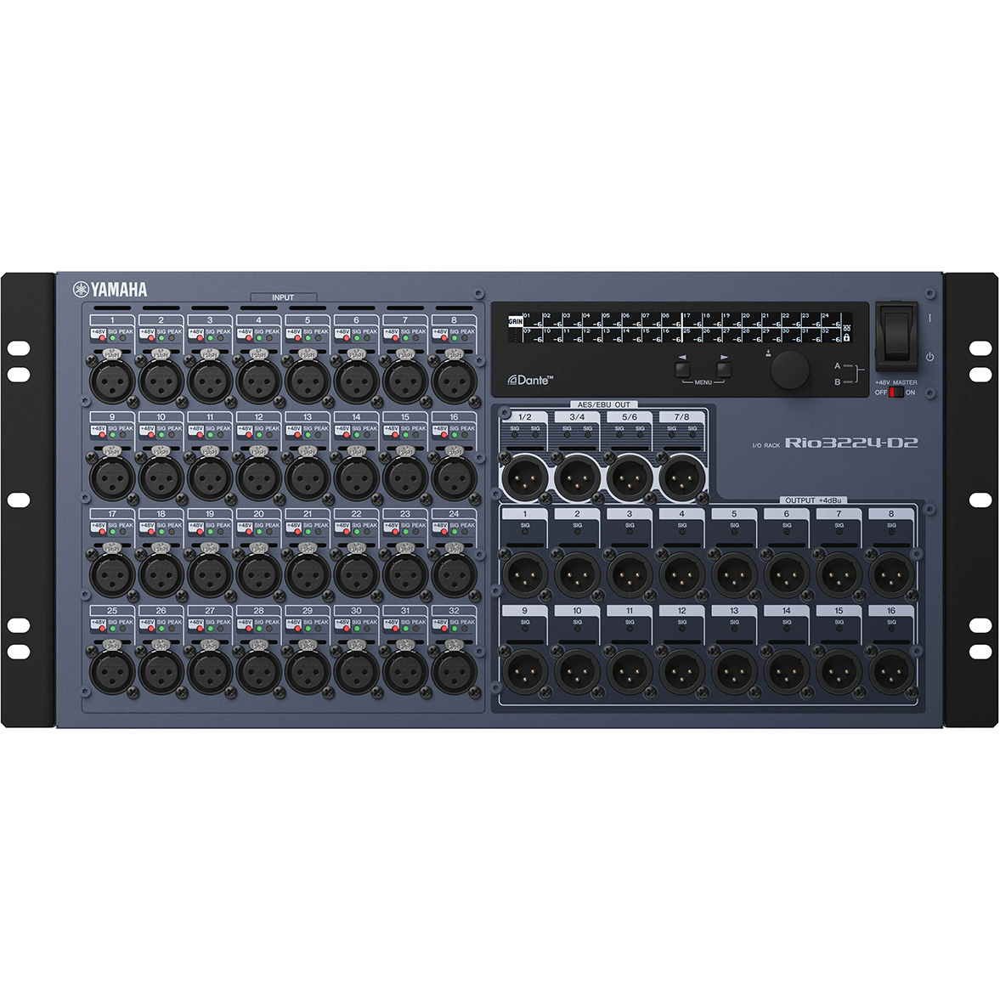
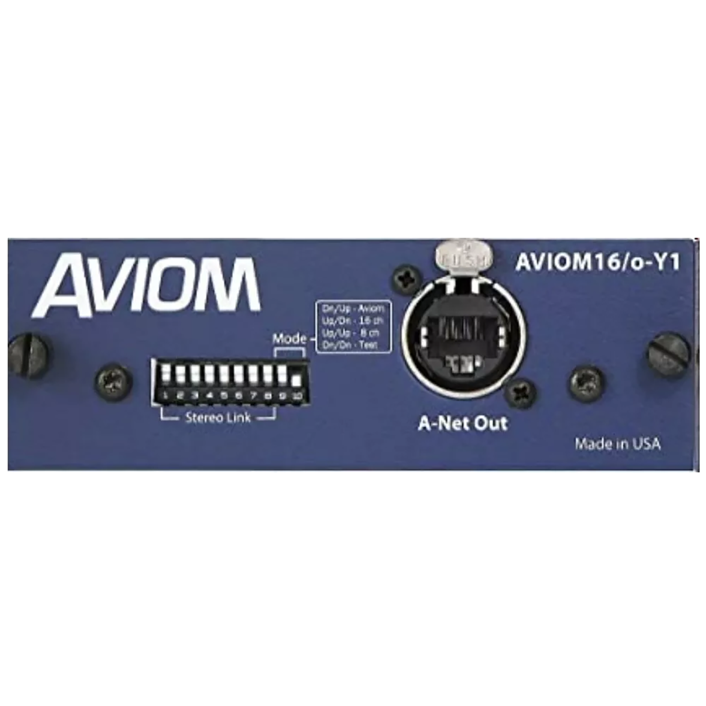
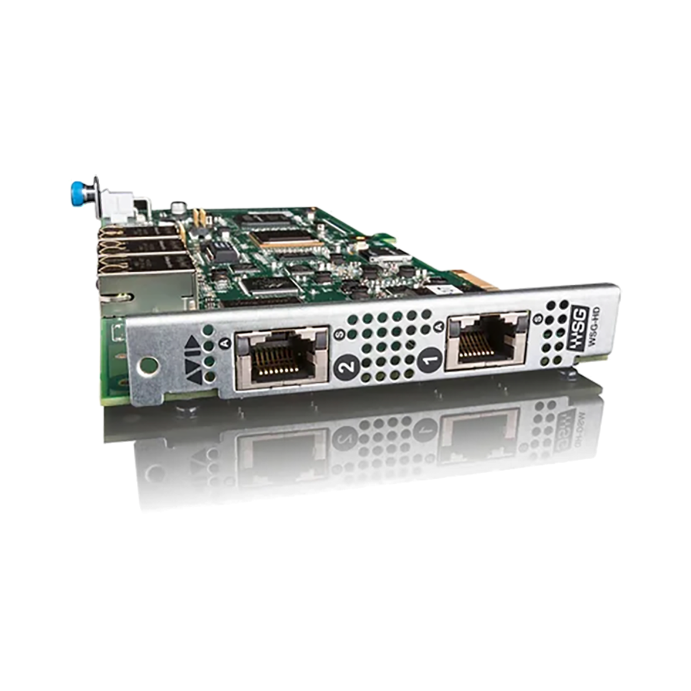
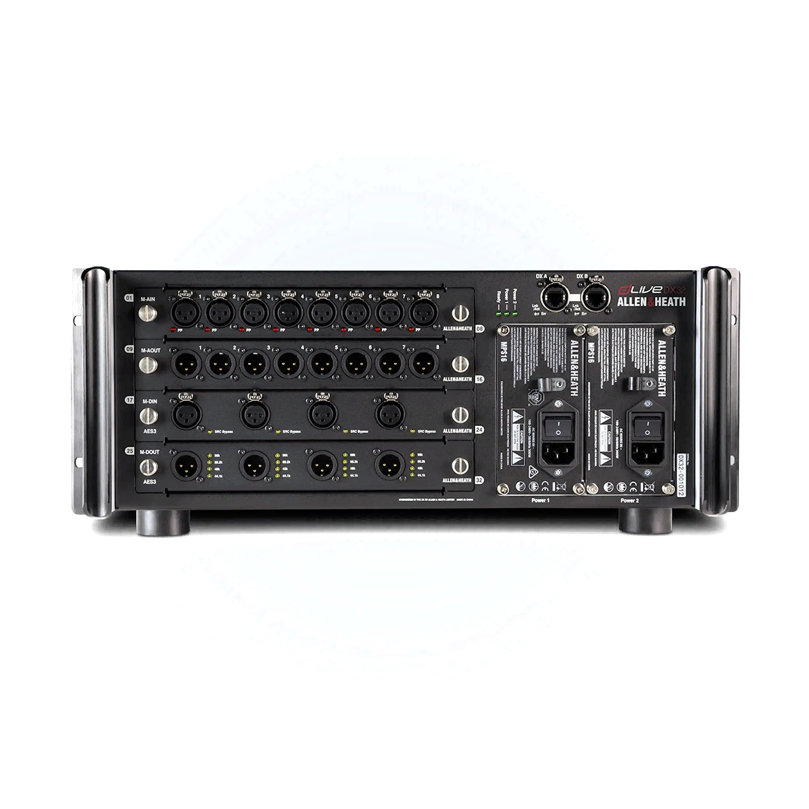
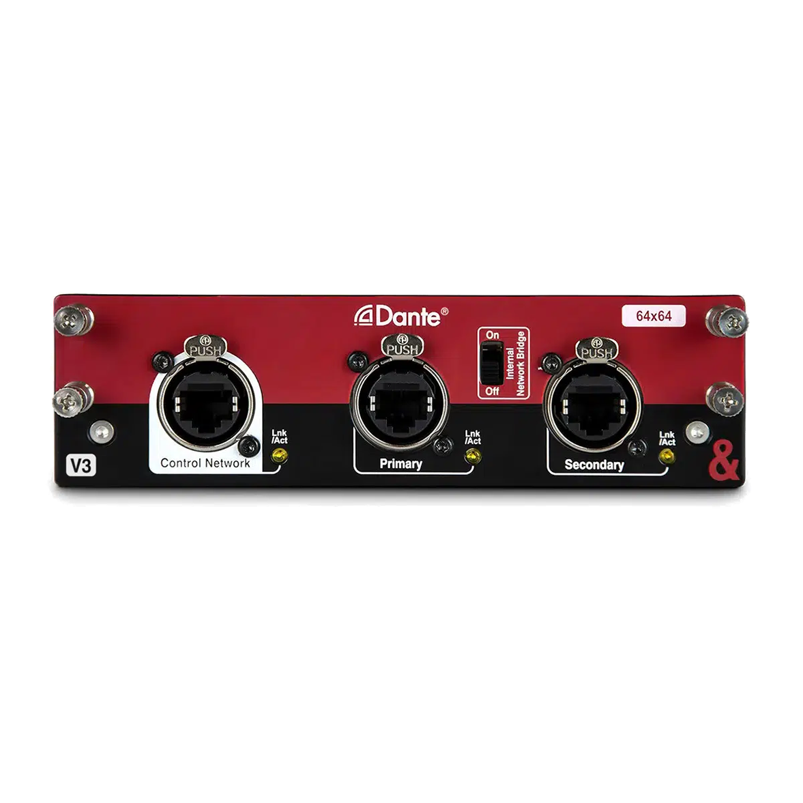
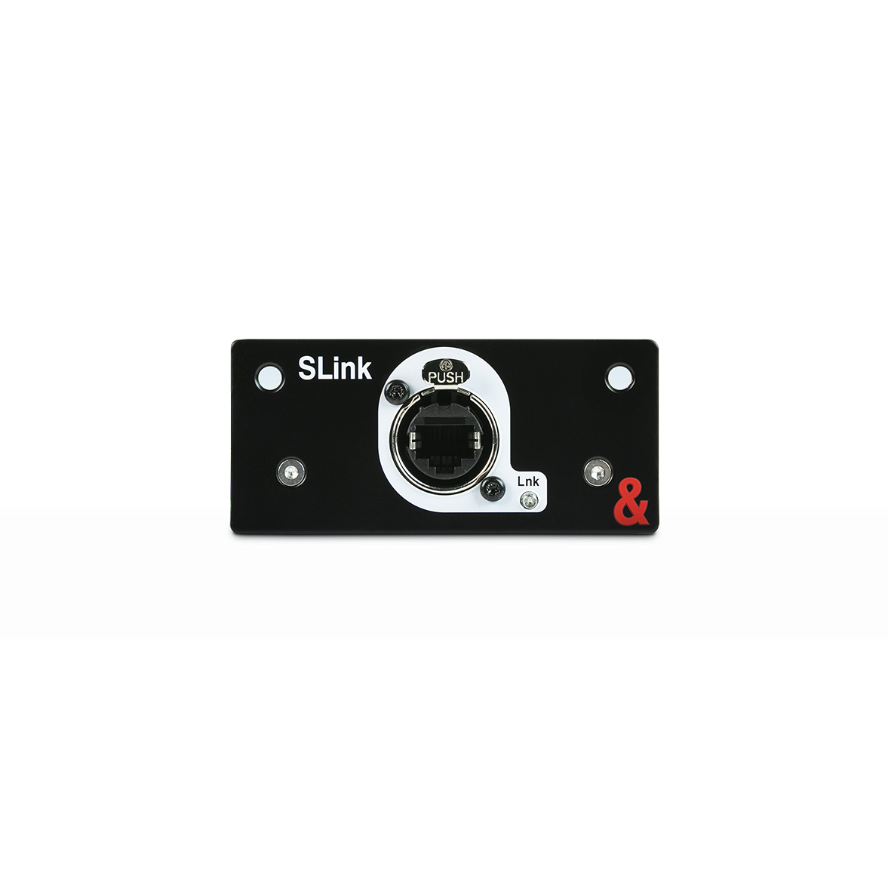
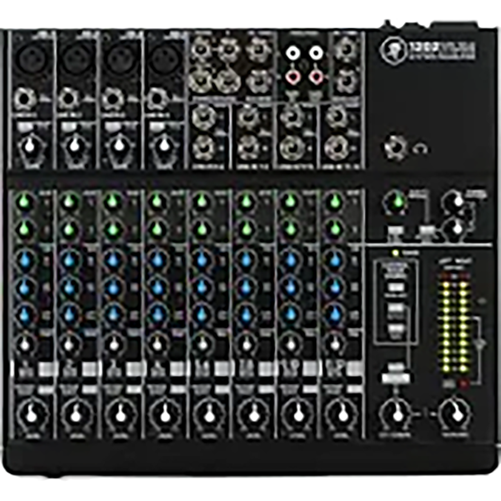
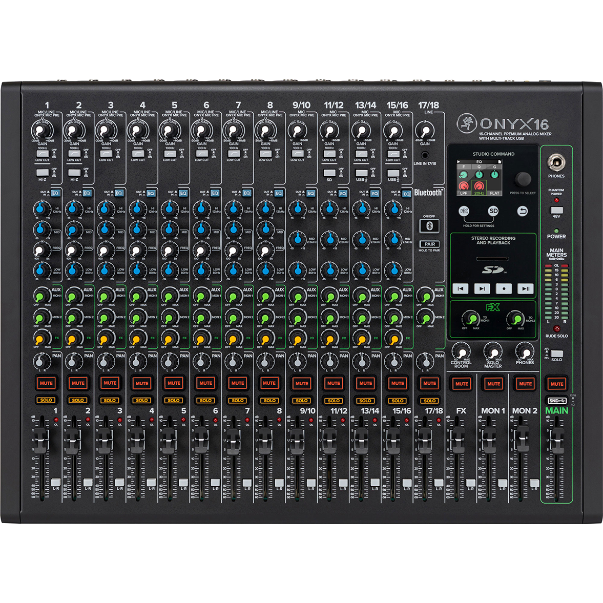

Skip to main content
Home
Services
Equipment
Sales
About
Contact
Back to Equipment
Professional Mixing Consoles
Browse our selection of professional digital and analog mixing consoles
RIVAGE Series
RIVAGE PM5
120 Input Channels
48 Mix Buses + Stereo
24 Matrix Buses
3 x 15" Touch Screens
96kHz Processing
Request Quote
CL/QL Series
CL5
72 Mono + 8 Stereo Inputs
24 Mix + 8 Matrix
Dante Network Audio
Touch Screen Interface
Premium Effects Rack
Request Quote
QL1
32 Mono + 8 Stereo Inputs
16 Mix + 8 Matrix
Built-in Dante Interface
Touch Screen Control
Local I/O: 16 in, 8 out
Request Quote
TF/DM Series
TF1
32 Channels
40 input mixing channels
20 Aux buses (8 mono + 6 stereo)
7" Touch Screen
16 analog XLR/TRS combo mic/line inputs
Request Quote
DM3-D
16 mono + 1 stereo + 2 FX return
Busses: 1 Stereo, 6 Mix, 2 FX, 2 Matrix
Local I/O: 16 Mic/Line
Dante: 16 inputs, and 16 outputs
48kHz/96kHz
Request Quote
MG16
10 Mic/Line + 3 Stereo Line Inputs
4 AUX Sends (incl. FX)
3-Band EQ with HPF
1-Knob Compressors
SPX Digital Effects
Request Quote
Racks & Interfaces
DSP-RX Engine
288 Input Channels
72 Mix + 36 Matrix Buses
RIVAGE PM Processing
TWINLANe Network
96kHz Operation
Request Quote

Rio3224-D2
32 Mic/Line Inputs
16 Analog Outputs
Dante Network Audio
96kHz Sample Rate
Remote-Controllable HA
Request Quote

Aviom16/o-Y1
A-Net Pro16 Output Card
16 Channel Output
Compatible with Yamaha MY-Card Slot
Personal Mixing System
Low Latency Performance
Request Quote
Waves WSG-Y16 V3
SoundGrid Interface Card
16x16 Channel I/O
Compatible with Yamaha MY-Card Slot
Waves Plugin Processing
Ultra-Low Latency
Request Quote
Dante-MY16-AUD2
Dante Network Audio Card
16x16 Channel I/O
Compatible with Yamaha MY-Card Slot
Sample Rate up to 96kHz
Primary/Secondary Port Redundancy
Request Quote
DUGAN-MY16
Automatic Mixing Card
16 Channel Processing
Compatible with Yamaha MY-Card Slot
Real-time Voice Detection
Speech System Optimization
Request Quote
HY144-D-SRC
144 Channel Dante Interface
Built-in Sample Rate Conversion
Primary/Secondary Redundancy
Compatible with RIVAGE PM Series
Up to 96kHz Sample Rate
Request Quote
Quantum Series
DiGiCo Quantum 7
256 Input Channels
128 Aux / Sub-Group Busses
48 x 48 Full Processing Matrix
3 x 15" Touch Screens
Quantum Processing
Request Quote
DiGiCo Quantum 338 Pulse
156 Input Channels
72 Aux / Sub-Group Busses
24 x 24 Full Processing Matrix
3 x 17" Touch Screens
Quantum Processing
Request Quote
SD Series
DiGiCo SD10
144 Processing Channels
64 Aux/Sub-Group Busses
24 x 24 Full Processing Matrix
15" Touch Screen
48/96 kHz Sample Rate
Request Quote
DiGiCo SD12 96
96 Input Channels
48 Aux/Group Busses
12 x 8 Full Processing Matrix
Dual 15" Touch Screens
48/96 kHz Sample Rate
Request Quote
DiGiCo SD11
80 Processing Channels
32 Aux/Group Busses
12 x 8 Full Processing Matrix
15" Touch Screen
48/96 kHz Sample Rate
Request Quote
DiGiCo S21
48 Flex Channels
16 Flex Aux/Sub Groups
Powerful FPGA Processing
Dual 10-inch Touchscreens
DMI Card Slots
Request Quote
Racks & Interfaces
DiGiCo SD-Rack 32bit
32-bit I/O
Up to 56 Inputs and 56 Outputs
192kHz Sample Rate
Optocore and MADI Connectivity
Hot-Swappable I/O Cards
Request Quote
DiGiCo SD-MiNi Rack
4 card slots for up to 32 I/O
192kHz Sample Rate
Optocore and MADI Connectivity
Hot-Swappable I/O Cards
Compact Design
Request Quote
DiGiCo SD-Nano Rack
16 Inputs and 16 Outputs
192kHz Sample Rate
Optocore and MADI Connectivity
Hot-Swappable I/O Cards
Compact Design
Request Quote
DiGiCo Orange Box
2 Card Slots for I/O Modules
Supports Multiple Formats
Optocore and MADI Connectivity
Compact and Portable Design
Request Quote
DiGiCo SD 32-Bit Mic Pre-Amp
32-Bit Mic Pre-Amp
High Dynamic Range
Dynamic punch and increased audio depth
Pure transparency of audio; 20-22kHz
Fully shielded analogue stage
Request Quote
DiGiCo SD 32-Bit DAC
32-Bit Digital to Analog Converter
High Dynamic Range
Dynamic punch and increased audio depth
Pure transparency of audio; 20-22kHz
Fully shielded analogue stage
Request Quote
DiGiCo 192kHz Mic/Line Input Card
192kHz Sample Rate
8 Mic/Line Inputs
2 LED indicators per socket
Compatible with SD-Range and 4REA4
Designed to be hot plugged
Request Quote
DiGiCo 192kHz Analogue Output Card
192kHz Sample Rate
8 Analogue Outputs
Compatible with SD-Range and 4REA4
Max Output Level: 24dBu
Designed to be hot plugged
Request Quote
DiGiCo AES/EBU Input/Output Card
192kHz Sample Rate
8 AES/EBU Inputs and Outputs
Sample rate conversion on inputs and outputs
Compatible with SD-Range and 4REA4
Designed to be hot plugged
Request Quote
DiGiCo AES/EBU Input Card (XLR)
192kHz Sample Rate
4 (stereo) AES input channels
Wide range sample rate conversion
Compatible with SD-Range and 4REA4
Designed to be hot plugged
Request Quote
DiGiCo AES/EBU Output Card
192kHz Sample Rate
4 (stereo) AES output channels
Limited sample rate conversion
Compatible with SD-Range and 4REA4
Designed to be hot plugged
Request Quote
DiGiCo Aviom D-16c A-Net Card
16 Channel A-Net Output
Compatible with Aviom Personal Mixers
Optocore and MADI Connectivity
High Dynamic Range
Compact Design
Request Quote
DiGiCo DMI-MADI-B
64 channels in and out and 48kHz and 96kHz
75Ω Coaxial (BNC) connections
For use with any standard BNC MADI audio device
Allows DiGiCo I/O to be controlled via an SD console through a 4REA4
Compatible with S-Series, Quantum Range, SD12, Orange Box and 4REA4
Request Quote
DiGiCo DMI-MADI-C
64 channels in and out at 48kHz and 96kHz
Only for use with DiGiCo audio over Cat5 devices
RJ45 connection
Internal switches to determine whether connected to a console or a rack
Compatible with S-Series, Quantum Range, SD12, Orange Box and 4REA4
Request Quote
DiGiCo DMI-WAVES
64 inputs and 64 outputs at 48kHz and 96kHz
Waves SoundGrid Connectivity
Ethercon connections
Two network ports connected via an inbuilt switch
Compatible with S-Series, Quantum Range, SD12, Orange Box and 4REA4
Request Quote
DiGiCo DMI-AMM
48 Input Channels
Two independent automatic microphone mixers with up to 64 channels
Weighting control on a per channel basis
Noise floor control
Compatible with S-Series, SD12 and Quantum Range
Request Quote
DiGiCo DMI-OPTO
Up to 128 channels of I/O at 48kHz
Up to 64 channels of I/O at 96kHz
Optocore and MADI Connectivity
Allows DiGiCo I/O to be controlled via an SD console through a 4REA4
Compatible with Orange Box and 4REA4
Request Quote
DiGiCo DMI-DANTE64@96
64 Input and 64 Output Channels
Dante Audio Networking
48kHz and 96kHz Sample Rates
Inbuilt SRC between 48kHz and 96kHz
Compatible with S-Series, Quantum Range, SD12, Orange Box and 4REA4
Request Quote
DiGiCo DMI-DANTE
64 Input and 64 Output Channels 48Khz
32 Input and 32 Output Channels 96Khz
Dante Audio Networking
Primary and Secondary (backup) Gigabit Ethercon ports
Compatible with S-Series, Quantum Range, SD12, Orange Box and 4REA4
Request Quote
DiGiCo DMI-KLANG
64 Input Channels
16 immersive mixes
3D In-Ear Mixing
0.25ms Latency
Compatible with Quantum Range, SD12 and Orange Box
Request Quote
VENUE Series
VENUE S6L-32D
192 Input Processing Channels
96 + LCR Mix Buses
Real-time AAX Plugin Processing
32 + 1 Touch-sensitive Faders
AVB Audio Networking
Request Quote
Racks & Interfaces
E6L-192 Engine
192 Processing Channels
Real-time AAX DSP
AVB Audio Networking
96kHz Processing
Pro Tools Integration
Request Quote
Stage 64
64 Mic/Line Inputs
32 Line Outputs
AVB Audio Networking
96kHz Operation
Remote-Controllable Preamps
Request Quote
Stage 32
32 Mic/Line Inputs
16 Line Outputs
AVB Audio Networking
96kHz Operation
Remote-Controllable Preamps
Request Quote
MADI-192 S6L Option Card
64 Channels at 96kHz
Dual MADI Ports
BNC Coaxial Connectivity
Sample Rate Conversion
Compatible with S6L Systems
Request Quote

WSG-HD Waves SoundGrid Option Card
128 Input/Output Channels
SoundGrid Connectivity
Real-time Processing
Waves Plugin Integration
Compatible with S6L Systems
Request Quote
dLive Series
dLive S7000
128 Input Processing Channels
64 Mix Outputs
DEEP Processing
Dual 12" Touch Screens
96kHz Processing
Request Quote
SQ Series
SQ-6
48 Input Channels
12 Stereo Mix Outputs
96kHz XCVI Core
7" Capacitive Touch Screen
SLink Digital Audio
Request Quote
SQ-5
48 Input Channels
12 Stereo Mix Outputs
96kHz XCVI Core
7" Capacitive Touch Screen
16 Local XLR Inputs
Request Quote
Racks & Interfaces
DM48
48 mic/line inputs
24 line outputs
96kHz Processing
3 I/O Ports
Remote Control via dLive Surface
Request Quote

DX32
32 Mic/Line Inputs
32Line Outputs
DX Expander
96kHz Operation
Remote Preamp Control
Request Quote
PRIME 8 XLR
8 XLR Mic/Line Outputs
Balanced Line Level
PRIME I/O Module
96kHz Operation
Hot-Swappable Design
Request Quote
GX4816
48 Input Channels
16 XLR Outputs
GX Expander
96kHz Operation
Remote Preamp Control
Request Quote
DX168
16 Mic/Line Inputs
8 XLR Outputs
DX Expander
96kHz Operation
Remote Preamp Control
Request Quote

dLIVE Dante 64Ã64
64 Input Channels
64 Output Channels
Dante Audio Networking
96kHz Operation
Primary/Secondary Port Redundancy
Request Quote
dLIVE Waves V3
128 Input/Output Channels
SoundGrid Integration
Real-time Processing
Waves Plugin Support
Ultra-low Latency
Request Quote
dLIVE superMADI
128 Input/Output Channels
MADI Protocol Support
BNC and Optical Connections
96kHz Operation
Redundant Power Supply
Request Quote

SQ SLink
128 Channel Digital Snake
Cat5e/Cat6 Connection
96kHz Operation
Remote Preamp Control
Redundant Connection Option
Request Quote
SQ Dante 64Ã64
64 Input/Output Channels
Dante Audio Networking
96kHz Operation
Primary/Secondary Port Redundancy
Compatible with SQ Series
Request Quote
Professional Series
1402-VLZ4
6 Onyx Mic Preamps
14 Total Inputs
3-Band EQ
4 Stereo Line Inputs
ALT 3/4 Stereo Bus
Request Quote

1202-VLZ4
4 Onyx Mic Preamps
12 Total Inputs
3-Band EQ
4 Stereo Line Inputs
High-Headroom Design
Request Quote

Onyx 16
12 Onyx Mic Preamps
18 Total Inputs
3-Band Perkins EQ
2 AUX Sends
USB Interface Built-in
Request Quote
ProFX Series
ProFX16v3
11 Onyx Mic Preamps
16 Total Inputs
GigFX Effects Engine
3 AUX Sends
2x4 USB Recording
Request Quote